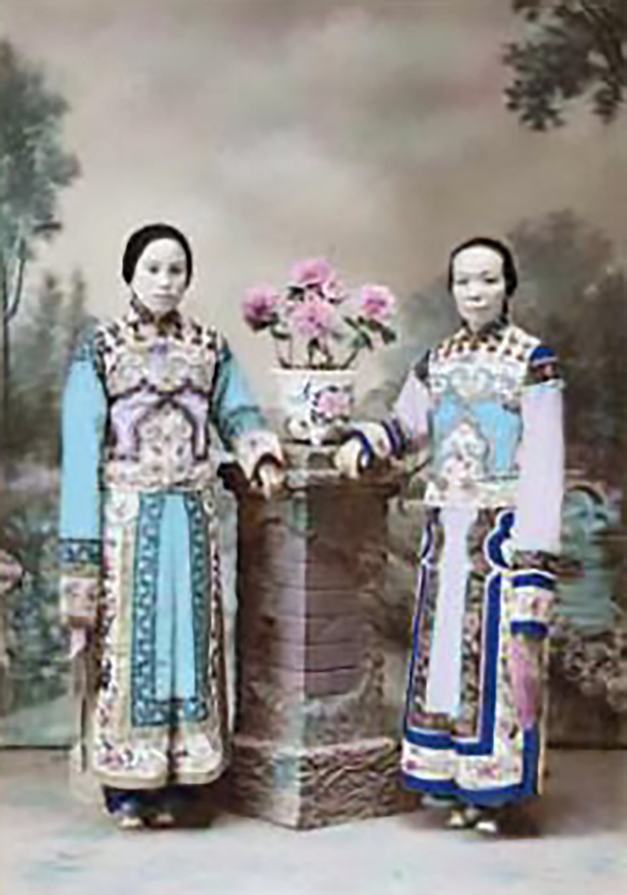

An experimental document that combines prose with short form fiction, to research the human face as a communication tool in context of linguistics, the myth and the spectacle, dramaturgy, Chinese theatre, face reading and control. Having touched upon all these topics, we’re left with humanity and storytelling.
Before we designed typefaces, we arranged the letter press. Before the letterpress, we copied manuscripts. Before the written word, letters were forming through drawings of elements around us. Before we saw our prey with our eyes, we felt them with our malleable lips, we smelt them with our delicate nostrils, we tasted them with our slimy tongue. How does the human face act in visual communication as a tool of articulation?
I’m curious to find out through a lengthy, endless, but in-exhaustive investigation, where I find meaning through cases looking in the past, such as the usage of the face in Chinese opera and face reading, but also future scenarios that embody future obstacles we may face, due to biases we hold from our own imperfect worldview, carried into powerful technology.
Because if you think about it for a second. Our face is biometrics. Our face is a meme, a joke, a one-liner. Our face is a business card. Our face is a target. Our face is a disguise. Our face is written, read, annotated and rewritten. Our face is an open book, a myth, a tragedy. Our face is not singular, we have many faces. Our face is a performance. Our face is never the same. Our face is corrupted. Our face is a tool. Our face is controlled. Our face is a stage; a full production, like a set. Our face is a facade. Our face is a storefront.
The face might be a storefront…
The opening hours of the store are…
A face. An animal’s front side of the head, where the eyes, nose, mouth are located. Together with an organism’s butthole, it’s one of the most fundamental body parts our animal species have been developing over the past millions of years.

Heidi Klum as a worm for halloween 2022
No wonder linguistically and etymologically, the term ‘face’ has for instance the following different meanings. The face of the mountain (front side something).
- The face of the mountain (front side something).
- Losing face (losing one’s dignity).
- To let down one’s facade (a front you put up to hide real emotions).
Mount Rushmore, showing the full size of the mountain and scree of rocks below from sculpting and construction
The young Mao Zedong statue is located on Orange Isle in Changsha, Hunan
Giant Buddha head hidden in the mountains of Guiyang
Collection of faces on facades of variety of buildings
An animal’s organ that’s so important to its existence. While it’s a survival tool of consumption, breathing and stimulation of its senses, it’s also become one of the most vulnerable body part for an organism.
A variety of muscle contractions and nerve twitches, the so-called facial expressions, have made it, so that’s easy to read one’s intentions or thoughts, through the emotions one is emitting. In turn, this allows cunning opportunistic predators to read their prey and attack them when they least expect it.

Tedesco in brazilian telenovela Senhora do Destino, as Math/Confused lady
The face has now become a communication tool. Are you comfortable, scared, happy, tired, or perhaps diseased? Are you uncomfortable, angry, assertive, sad, or healthy? Your face speaks volumes. Before civilisations invented language and therefore read words or decoded voices, we in fact had the 1.0 hardware of communication. Facial expressions.1
↩1 Jack, R. E., & Schyns, P. G. (2015). The human face as a dynamic tool for Social Communication. Current Biology, 25(14). https://doi.org/10.1016/j.cub.2015.05.052.
Sophia, First Robot Citizen at the AI for Good Global Summit 2018
Facial expressions have the power to convey communicational signs and therefore it’s tempting to believe in the universality hypothesis, especially from a Darwinist point of view. This idea of universal facial expressions through evolutionary assigned behaviour is highly disputed however. Even though, we have evolutionarily evolved shared emotions of fear and disgust, originally serving as an adaptive function, facial expressions have ever since evolved and diversified to serve primarily as emotion communication in social interactions.2
↩2 Jack, R. E., Garrod, O. G., Yu, H., Caldara, R., & Schyns, P. G. (2012). Facial expressions of emotion are not culturally universal. Proceedings of the National Academy of Sciences, 109(19), 7241–7244. https://doi.org/10.1073/pnas.1200155109.
Hence, I suggest to consider that my perspective is speaking mostly from the perspective of European Theatre and dramaturgy, Chinese face reading and Chinese Opera, which in and of itself already are in different cultural spheres. Analysing the face and its facial expressions are positioned in a nuanced and the broader context of the culture in which these are found.
Having introduced the face as a tool for visual communication, we can even go further in terms of reading meaning in the face. In this chapter, I’d like to connect the linguistic tradition of semiology and semantics to the visual communication by the face.
As Saussure, argues within semiology there’s different components in the communication of codified visuals. He argues that there’s a messenger and a receiver. The messenger who emits a code, in whatever visual form, and a receiver, who receives a codified visual image. This code will be interpreted and decoded to make further actions.3
↩3 Hall, Stuart. (1997). The work of representation. In Representation: Cultural Representations and Signifying Practices, edited by Stuart Hall, (pp. 13–69). London: SAGE.
The words impressive and expressive illustratively describe the semiotic mechanism in which we produce meaning. It’s exactly that physical exchange of information that the face has been facilitating. Impression and expression. Inhaling and exhaling. Winking and seeing. Singing and hearing. Kissing and being kissed.
Here you can see the model of communication. Where Stuart Hall argues that we encode and decode messages to form a bigger discourse of meaning.
Saussure and the model of communication
Hall and encoding/decoding model
Roland Barthes' myth model
Roland Barthes adds to the idea of the signifier and the signified the idea of the myth. He goes to explain that on top of the initial literal reading of images through representation of the signified and signifier, which denotes a simple message, there’ could be another deeper meaning hidden within the composition. This second layer of signification is what he calls, the myth. Roland Barthes elaborates that this myth could be found in different manifestations:4
↩4 Hall, Stuart. (1997). READING C: Roland Barthes ‘Myth today’, The work of representation. In Representation: Cultural Representations and Signifying Practices, edited by Stuart Hall, (pp. 13–69). London: SAGE.
“We must here recall that the materials of mythical speech (the language itself, photography, painting, posters, rituals, objects, etc.), however different at the start, are reduced to a pure signifying function as soon as they are caught by myth. Myth sees in them only the same raw material; their unity is that they all come down to the status of a mere language. Whether it deals with alphabetical or pictorial writing, myth wants to see in them only a sum of signs, a global sign, the final term of a first semiological chain. And it is precisely this final term which will become the first term of the greater system which it builds and of which it is only a part.”
Reading C: ‘Myth Today’ - Roland Barthes
He continues calling these different manifestations the language-objects, because it is the language which the myth gets hold of in order to build its own system.
The signifier and signified model by Saussure
The illustration on the Pioneer plaque
Of course, we as a species have understood this game of communication for a while now. Otherwise, we wouldn’t have been here today, hasn’t it been for our survival skills. We’ve noticed that other than just reading a face you can also ‘write’ a face.
Zhang Huan, Family Tree (detail), 2000, C-type prints.Suite of 9 images. Collection: Gene & Brian Sherman, Sydney
In other words, we know how to manipulate the expression of true emotions in order to gain something from it. This thing to gain, might be approval of a community around you, not sticking out to get picked on or just to have power in negotiating.
All in all, we see that within the circle of theorists on semiotics, there’s been conceptualisation of how we as humans read images and how there’s been an extension of linguistics language analysis to a visual cultural analysis.
Here, we see a connection to the same way Chinese Opera has operated for centuries and as well the complex cultural phenomenon of face reading. The former being encoding a message to the audience, while the latter is a centuries old tradition and cultural context of reading ‘the myth’ off from someone’s face. A mythical exercise of reading one’s fortune and letting one’s fortune be read in a mystical setting.

Fortuneteller, Images related to Shanghai and other Chinese cities, 1866-1900. Li Fai.
There’s a close relationship between the concept of performativity and dramaturgy in the context of linguistics and the creation of meaning. This chapter shows how theoretically our physical and social face is closely related to theatre and its inner workings (dramaturgy).
Judith Butler argues that the difference between how language creates meaning and the theory of performativity in dramaturgy is a performative act itself. A performative act is in fact a combination of both, if we look at J. L. Austin’s thoughts on the primary use of language. He believes that making statements or formulating propositions isn’t the main purpose of language, but in fact it is the communication of meaning and intentions, that have consequences; a “speech act” if you will. Austin continues to distinguish “illocutionary” from “perlocutionary” speech acts. The former does what it says by saying in the moment of saying, while the latter produces a certain effect as their consequence. Austin relates these perlocutionary speech acts to have social impact and therefore sees it as a public ritual.5
↩5 Zelezny, J. A. (2014, October 6). Judith Butler: Performativity and dramaturgy. Performance Philosophy. Retrieved February 20, 2023, from https://www.performancephilosophy.org/2014/10/06/judith-butler-performativity-and-dramaturgy/.
Speech acts by J. L. Austin.
However, unfortunately, not all utterances of the performative are successful and are de-fused, leading to discontinuity in communication. This phenomenon is described by Bertolt Brecht as the “Verfremdungseffekt”. Austin’s Schema classifies for a “happy/felicitous” and a “unhappy/infelicitous” performative. The latter being cases where flaws in completion of conventions are apparent or where abuses occur. We can easily see how this “impression management”, or lack thereof, creates conflict and drama, the basis of the human condition and the basics for a theatrical drama play.6
↩6 Ibid.
Face-to-face interactions (dramaturgical analysis)
In sociology, above mentioned manipulation of communication is also understood as part of Goffman Erving’s dramaturgical analysis, The Presentation of Self in Everyday Life. He argues that face-to-face interactions between people are always an attempt to control or guide the impression others make of them by manipulating their setting, appearance and manner. At the same time, the other individual is trying to form and obtain information about the other.
We are constantly performing our emotions, dependant on the society one was raised in, what social occasion one is at, or simply to emphasise your emotion to yourself. Performativity of the face having both a back region and a front region (backstage vs. on stage), which allows us to have an intimate emotion, kept secret to ourselves, and a publicly shared one, performed for an audience.7
↩7 Goffman, E. (1973). The presentation of self in everyday life. Overlook.
Therefore, I argue we have an innate and intimate connection to the art of performance and theatre. Our facial expressions are in fact a theatrical and spectacular phenomenon.
The face is mesmerising. A stage where myths and stories are unfolded, one wink, one breath and one frown at a time. Despite this visual language that expresses minute nuances, it’s considered that our visual communication customs are learnt behaviour and differs from group to group. Even the “white canvas” that clowns paint their face to erase their facial features is signified and bears connotations.
Jean-Charles Deburau as pierrot By Nadar & Adrien Tournachon (1855)
Stuart Hall touches on the conversation of ‘othering’ based on physical differences in The Spectacle of The ‘Other’. In ways we can compare the terms ‘myth’ and ‘spectacle’ to each other. While the ‘myth’ is a symbolic representation of a grammatical expression, the ‘spectacle takes it a step further, often related to economic incentive, political agendas and commodification.8
↩8 Hall, Stuart. (1997). The Spectacle of the ‘Other.’ In Representation: Cultural Representations and Signifying Practices, edited by Stuart Hall, (pp. 223–290). London: SAGE.
He argues that around the turn of 20th century, the development of businesses advertising objects to the Victorian middle classes provided an ‘imaginary way of relating to the real world’ of commodity production. Richards claims it’s a ‘spectacle’, since ‘advertising translated things into a fantasy visual display of signs and symbols.’ The production of commodities became linked to Empire - the search for markets and raw materials abroad supplanting other motives for imperial expansion. It doesn’t seem like your face is just another John Doe in the age of rapid expansionism, globalisation and imperialism after all. In fact, self-mythologising and spectating the other became the norm on a mass scale due to the technological age we embarked into.9
↩9 Ibid.
FIGURE 4.8 Nineteenth-century advertisements for Pears' soap - CHAPTER 4 THE SPECTACLE OF THE ‘OTHER’, Stuart hall
Hall continues to illustrate how this ‘spectacle’ carries itself out in a schismatic way, in his example of the Black male body. He calls this spectacle the sculptural code, influenced by the enamoured Greek and sculptors’ creations, imagining the most athletic bodies they knew. This sculptural code is then superimposed on the stereotype of the black man as a sports hero; “mythologically endowed with a 'naturally' muscular physique and an essential capacity for strength, grace and machinelike perfection: well hard.” It is exactly this area where the schism of white male ambivalence, fear and fantasy appear. The black bodies triumphs in rituals of masculine competition, which reinforces and idolises the Other to a point of envy. Tabloids that translate these sentiments into headlines of black males becoming a peril and danger to the Caucasian population, as thugs, rapists, terrorists and crooks:10
↩10 Ibid.
"their bodies become the imago of a savage and unstoppable capacity for destruction and violence.”
READING D: Kobena Mercer, 'Reading racial fetishism'' -CHAPTER 4 THE SPECTACLE OF THE ‘OTHER’, Stuart hall
“(a) the construction of 'otherness' and exclusion; (b) stereotyping and power; (c) the role of fantasy; and (d) fetishism.”
The 4 steps of signifying practice of stereotyping.
Such stereotypes were then materialised into reductive representations of the Other race, a ‘racialised regime of representation’. Again, there’s an economic and political incentive, perpetuating that not all races are equal, allowing the imperialist forces to justify racial supremacy. Simultaneously were:11
↩11 Ibid.
“black people … reduced to the signifiers of their physical difference — thick lips, fuzzy hair, broad face and nose, and so on. For example, that figure of fun who, as doll and marmalade emblem, has amused little children down the ages: the Golliwog.”
2. Racialising the ‘other’ - CHAPTER 4 THE SPECTACLE OF THE ‘OTHER’, Stuart hall
FIGURE 4.26 German caricature of man viewing the Hottentot Venus through a telescope, early nineteenth century -CHAPTER 4 THE SPECTACLE OF THE ‘OTHER’, Stuart hall
While physiognomy works with archetypical physical features to one’s personality, it’s not there to intentionally harm people. However, keeping in mind how wired we can become to certain thought patterns and propaganda, it’s important for me acknowledge the similar traits to the discussed above and the next topic.
Face reading, also known as telling fortune based on the Chinese physiognomy, is a cultural practice, that requires a face reader (a shaman or fortune-teller), who interprets facial features to give a peek into one’s future or personality traits. The seer could be seen as the vocation consultant and the face itself as a business card of feudalistic China. Culturally biased opinions on beauty and morality of course are embedded in these practices, which I’m not arguing against; face readers never claim to be scientific or above the law of nature.
Knowing that this practice is taken with a grain of salt, still has me feeling disagreeable to gather from online manuals that having a small forehead and a wide jaw means that you have a difficult personality. It’s rather the lack of willpower of oneself or sovereignty to change despite having inherited a specific appearance.
After a short online chat with an amateur in feng shui and face reading, I’ve learnt that in fact, most face reading divinators are either experts and highly politically connected or amateurs, who don’t bother to share their interest. People also seek help from a seer due to psychological and social motivations. He goes on to enlighten me that face reading is in fact a complimentary procedure in the bigger picture of fortune telling one’s destiny. Therefore, I suspect it’s a rather interpretative session, demanding strong engagement from the one who seeks help at the fortune teller. Similar to how horoscope and astrology works.
At the end of the day we just want to control something that was given to us by mother nature and seek deeper meaning in the materiality of our body. In fact, physiognomy and shamanism are believed to be the primitive precedence of current day Chinese opera.12
↩12 Llamas, R. (2021). Reassessment of the place of shamanism in the origins of Chinese theater. Journal of the American Oriental Society, 133(1). https://doi.org/10.7817/jameroriesoci.133.1.0093.

Result of dall-e AI with the Prompt: stained glass storefront in art deco style in the shape of a human face
The storefront, a big glass window decorated with bright rainbow LED fairy lights. The curtains, semi transparent. The display window, filled with acupuncture models, a big A1 portrait face reading poster with sloppy typography and a magenta plasma ball shaped into the Buddha's head. The tone and the atmosphere is set.
When I enter the shop, I hear the sound of wind chimes resonating through the space. The only two other sounds I could hear was the humming of a little minibar sticking out from the small reception desk and the ticking of an elegant antic wooden pendulum clock.
Ever since I heard my boss tell me how he disliked this lady he met at church upon first glance, I was intrigued why he would make such a resolute judgement. The sentence I remember was something along the lines of "Her face isn't so auspicious." It got me curious to find out what is so unlucky about a person's face. Are we speaking of pretty privilege and how owning a conventionally unattractive face would lend you to a harsher treatment by others or is it just a euphemism to shadily say the same thing "She's a shrimp. A seafood, mostly consumed for their meat, but their head is discarded right into the bin. In other words. She's unlucky to be born with such a damn ugly face.”
However, when I finally met this lady from the church, I was perplexed why he'd call her un-pretty. She is actually ticking all the boxes of a charming person. While she has a peculiar longer face shape, her jawline is striking. Perhaps it’s just an superficial conspiracy, which he has about her personality.
I saw a shadow move through the hallway towards the main area, making the bead curtain going click-clack. The bead crystals reflected a myriad dancing light blurs behind the counter.
A man in his mid 60s made his way to the reception desk slouching the slippers along the black and white tiled floor. Halfway through his walk, he noticed where I was standing and waved his long fingered hands at me. “Hello, how could I help you out?” I noticed he had a black tattoo of a Peking opera performer on his wrist.

Visually interesting to see how these face reading sessions have been marketed recently. Through internet desk research I’ve compiled a bunch of these diagrams from different sources.
If we focus on the performative aspect of emoting with our face, we can even abridge this theory further into the origins of theatre. I’ll specifically focus on Peking opera and the painted face as a communication tool.
Chinese Theatre
It’s important to know that Chinese opera, while being referred to as opera, places emphasis on other features than the European tradition is used to. First of all, in the Chinese tradition, there’s priority in the theatrical rather than the literary form. This means that instead of the text being the most essential piece, the performance is rigidly controlled by conventions of acting, dancing and singing. The difference can somewhat be compared to classical music versus jazz music, which is more interpretative.13
↩13 Brockett, O. G. (1991). Chapter 9 The Theatre of the Orient. In History of The Theatre (6th ed., pp. 237–277). Allyn and Bacon.
Additionally, Chinese theatre consists of four basic elements, which are singing, speaking, acting and acrobatic fighting. The type of plays are usually classified under the two categories of either civil plays, which deal with social and domestic themes, or military plays, which involve the adventures of warriors or brigands.14
↩14 Ibid.
Fig. 6.23. Lai Fong (Afong Studio). ‘No. 42. Native Actor and Actress’, 1870s.
Fig. 6.24. Lai Fong (Afong Studio). ‘No. 34. Group of Chinese Actors and Actresses’, 1870s.
Fig. 6.26. Lai Fong (Afong Studio). Chinese actors, 1870s. Author’s Collection.
Fig. 6.50. Wo Cheong (Cheung). Actors, 1890. Hand-tinted gelatin silver print photograph. Author’s Collection.
Fig. 6.51. Wo Cheong (Cheung). Two Chinese actors, c.1890. Hand-tinted silver print photograph. Author’s Collection.
Semantics in Chinese theatre
Before I’m explaining specifically how the Peking opera Face Paint and the deeply semantic symbolism, I reckon it’s crucial to display how much meaning and conventions are embedded in all the various aspects of Chinese theatre, due to the improvising nature of the performance.
Chinese opera stage (Prince Zhong House)
Still from the film ‘Farewell My Concubine’ (1993)
Still from the film ‘A New Old Play’ (2021), lending visual language from stage of chinese opera,it creates familiarity, despite being artistically free.
A suitable illustration for this nature is characterised by the architectural usage of the playhouse. The original stages were simply the porches of temples in the early development of theatre. This influenced the currently known traditional stage, which is an open raised square platform, equipped with a carpet, and two doors. The right one as an entrance and the left one as an exit by reason of how text was written from right to left prior to modernisations. Between the doors was a large embroidered curtain. The stage was covered by a roof supported by lacquered columns. The only unchanging equipment were a wooden table and chairs.15
↩15 Ibid.
This straightforward setting allowed for swift changes of place, indicated by the actors speech, actions or props. Such actions may for instance the actor feigning knocking at gates, entering chambers, or climbing steps. If the actor circled the stage, it indicated a tedious journey. The table and chairs might symbolise a law court, banqueting hall or other scene, for each of which furniture was fixed according to a defined formula.16
↩16 Ibid.
Additionally, adding props to this set, specifies the scene considerably:
“an incense tripod on the table indicated a place; paper and an official seal indicated an office; an embroidered, divided curtain hung from a bamboo pole signified a general’s tent, an emperor’s chamber, a drawing room, or a bride’s bedroom, depending upon the other properties with which it was combined.”
“Chapter 9 the theatre of the orient” History of the theatre 6th edition, Oscar G. Brockett
The Actor's painted face
In the Chinese canon of operatic performances, we see a specifically signified layer of symbolic face paint that tells a story to the audience, beyond the facial performativity of the actor. This had a reason. In order to democratically perform for layer of society, including the illiterate (which was most of people in the feudal Dynastic period), the sung lyrics were not the only way of expressing a narrative, but additional background information, characterisation and archetypes were expressed through aesthetic symbols on the face of the actor.
We can for example look at the different categories of roles in Chinese opera; male, female, painted face and comic. The male roles were subdivided into young, old and warrior men. Usually the male roles wore exaggerated beards, unless if they are a young role. The female roles were part into gentle, dissolute, warrior or old women roles.
Surprisingly, most female roles during the 18th and 19th century were forbidden to be portrayed by women, resulting in the custom of cross-dressing in the male actor’s realm of acting, producing an early on dialogue on gender during the modernisation period of the Republic of China. After 1911, women returned to the stage, taking over their roles.
The painted face roles are often elaborately patterned faces, playing deceitful roles, such as bandits, officials, gods and supernatural entities. While the comic actor speaks in everyday dialect, improvises and is the most realistic of all characters, often lending a good medium to bridge the story to the audience.
The bearded male roles usually barely wear face paint. However, the unbearded male has a white face with a pink blush around the eyes and cheeks, similarly to the female role. What distinguishes the comic is the white patch around the eyes, as well as how black markings differentiate the particular comic.17
↩17 Ibid.
Painted face roles are often more specific since they tend to depict a known character who has particularities in their back stories. These are often condensed into the face paint:18
↩18 Wang, D., Kang, J., Qin, S.-F., & Birringer, J. (2015). Cultural-based visual expression: Emotional analysis of human face via Peking Opera Painted Faces (POPF). Multimedia Tools and Applications, 75(19), 11865–11891. https://doi.org/10.1007/s11042-015-2665-7.
Top to bottom:
Hou Yi: 9 dots represents the 9 suns he shot down, Huyan Zan: the character 王 [king] points out he’s the Chief of the Xiongnu, Zhong Lichun: the lotus flower represents a female warrior and Li Keyong: 3 scratches illustrate he was once scratched by an eagle.
If we look at the previous chapters, we discovered that we are in fact aware of our environment, in which we interact with individuals. In this chapter I’ll explore the idea of freewill an power structures.
Facing a new culture
In 1966 in the People’s Republic of China, a political campaign, the Cultural Revolution, was launched by Mao Zedong. His stated goal of this political campaign was to preserve Chinese communism by cleansing the Chinese society from remnants of capitalist and traditional elements. This campaign led by the mobilised youth, the Red Guards, created a personality cult around Mao and his iconic face. One might argue that this substituted a once (and officiously still) religiously diverse geography of various worshipped deities for his own cult.19
↩19 The Economist Newspaper. (2021, January 7). A revealing account of the Cultural Revolution. The Economist. Retrieved February 20, 2023, from https://www.economist.com/books-and-arts/2021/01/07/a-revealing-account-of-the-cultural-revolution. (Paywall).
A cult, which results in a constant reminder of the Chinese Communist Party, a fly on the wall, Big Brother is watching you; a Panopticum of some sorts, if you will.20
↩20 Tokmetzis, D., & Speelman, T. (2016, May 12). Wat Je van Chinezen over Censureren Kunt Leren. De Correspondent. Retrieved February 20, 2023, from https://decorrespondent.nl/4368/wat-je-van-chinezen-over-censureren-kunt-leren/.
Mao Zedong in 1963.
Panopticum: Construction of the dome prison in Haarlem, 1899 - 1901.
During this period one of the goals was to get rid of the Four Olds; namely, old customs, culture, habits, and ideas. Specifically concerning Beijing opera, Jiang Qing took control of the stage and introduced the revolutionary model operas under her direct supervision. Traditional operas were banned as they were considered feudalistic and bourgeois, yet revolutionary opera, which is based on Peking opera, modified in both content and form, was promoted.21
↩21 Lu, Xing (2004). Rhetoric of the Chinese Cultural Revolution: The Impact on Chinese Thought, Culture, and Communication. University of South Carolina Press.
While traditional Chinese opera found a didactic function educating and forming the illiterate demographic at the turn of the 20th century, during the Cultural Revolution, this function had been polished to be a vehicle of mass propaganda and spreading Mao’s teachings. Taking the form of the original performance, but changing the topics completely, erasing "emperors, kings, generals, chancellors, maidens, and beauties" of the traditional Peking opera.22
↩22 Barbara Mittler, "Eight Stage Works for 800 Million People": The Great Proletarian Cultural Revolution in Music — A View from Revolutionary Opera. The Opera Quarterly 26, no. 2 (2010): 377. Retrieved February 20, 2023.
Many performers in the field of opera were persecuted. Academics and intellectuals were regarded as the "Stinking Old Ninth" and were widely persecuted.23
↩23 Ip, H.-yok. (2004). Intellectuals in revolutionary China, 1921-1949. Leaders, Heroes and Sophisticates. https://doi.org/10.4324/9780203009932.
In the 1960s and 1970s, many were sent to rural labor camps such as the May Seventh Cadre School.24
↩24 Stokes, Mark A. (July 2003). "The People's Liberation Army and China's Space and Missile Development". In Laurie Burkitt; Andrew Scobell; Larry Wortzel (eds.).
We see, our face and performance of our identity is at all times in a dance with the macro environments we move between. A once distinctive profession of Chinese traditional culture has become a persecuted livelihood and brand marked as feudalist, elitist or capitalist. Not the face of a poverty stricken and oppressed farmer, but the face of an elitist pig bourgeoning and indulging oneself in the art of,
‘What?’
entertainment.
Anticipation conjuring the face
Judith Butler illustrates another way these macro superstructures can manifest. She argues that we indeed have no core identity, in her case specifically about gender identity, and that the naturalisation and politicisation of heterosexuality is an unnecessary fiction. In fact, we’re always in a process of acquiring gender. We should quote Simone de Beauvoir that ‘one is not born but becomes a woman.’ She argues that gender is ‘an historical idea’, which Butler expands on saying it’s ‘the anticipation conjuring its object.’ It’s therefore important to acknowledge these historical, social and power structures that enforce identities onto us.25
↩25 Zelezny, J. A. (2014, October 6). Judith Butler: Performativity and dramaturgy. Performance Philosophy. Retrieved February 20, 2023, from https://www.performancephilosophy.org/2014/10/06/judith-butler-performativity-and-dramaturgy/.
To face the digital
Currently, our face is in fact in a chokehold between an expected social performance and the ever growing digital and technical control enforced by states and corporations. Add into the mix the spiritual predetermined fate our face is given to us, it leaves little room to imagine what life’s like without so much monitoring.
There’s a parallel between the idea of growing digital control of our face, such as digital biodata stored for government administrations, which enforces segregation and invasion of privacy in occupied areas such as Xinjiang (China), disproportionately trained algorithms used by the police to scan criminals, accidentally misrepresenting us in studies, but also the trend to AI generate custom bespoke portraits of oneself, without knowing what your personal data is used or sold for.26
↩26 China's algorithms of repression. Human Rights Watch. (2021, November 10). Retrieved February 20, 2023, from https://www.hrw.org/report/2019/05/01/chinas-algorithms-repression/reverse-engineering-xinjiang-police-mass.
It seems that our biological data and, in our modern day specifically, the function of our face to confirm or pigeonhole our identity, does bring the topic of predestined fate versus freewill to the table.27
↩27 European Union for Fundamental Rights. (2002). BIAS IN ALGORITHMS, ARTIFICIAL INTELLIGENCE AND DISCRIMINATION, REPORT. Publications Office of the European Union.
What does it mean if your face has an unfortunate database behind it? What is the difference between current power structures and the structures of identifying luck and misfortune through physiognomy? What if the category itself, which our society divides people by is as such already a bias? Perhaps the calculations are more precise and parameters that influence this outcome stronger. Nonetheless, it’s an important mental exercise to be aware of a once mystical practice to have now access to technology to confirm its bias.28
↩28 Holtermann, C., & Kircher , M. M. (2022, December 7). How is everyone making those AI selfies? The New York Times. Retrieved February 20, 2023, from https://www.nytimes.com/2022/12/07/style/lensa-ai-selfies.html.
While we might never know, if divinators and seers are to be trusted, when asked about our face and fate. We do know that the intention to seek prophecy is far beyond the answer and the be-all and end-all of life. If I ponder on why we solicit fortune telling, it’s ofttimes, because we struggle with the fear of control and the question where our place in a big world of forces is, that’s trying to manipulate us. How a diviner talks in tongues is similar to the experience of watching a theatre play or film. Ultimately, we are all storytellers and audiences. Some of us use words, but we all use our face and turn looks.